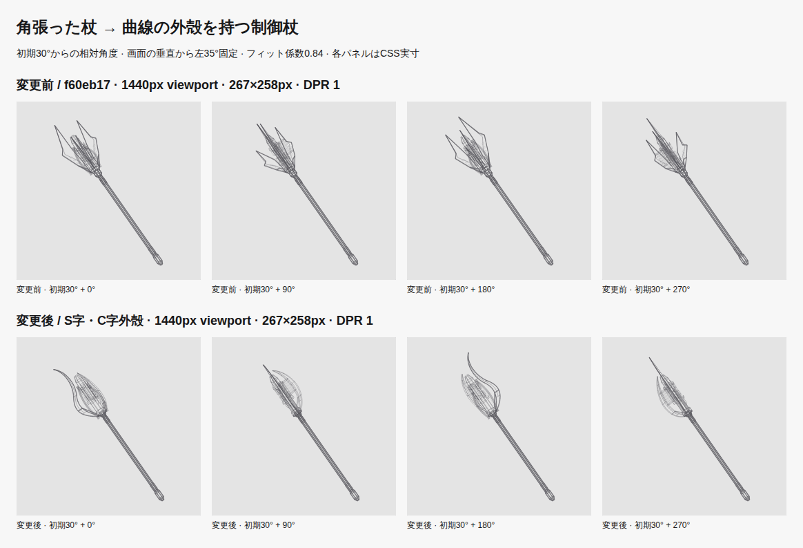
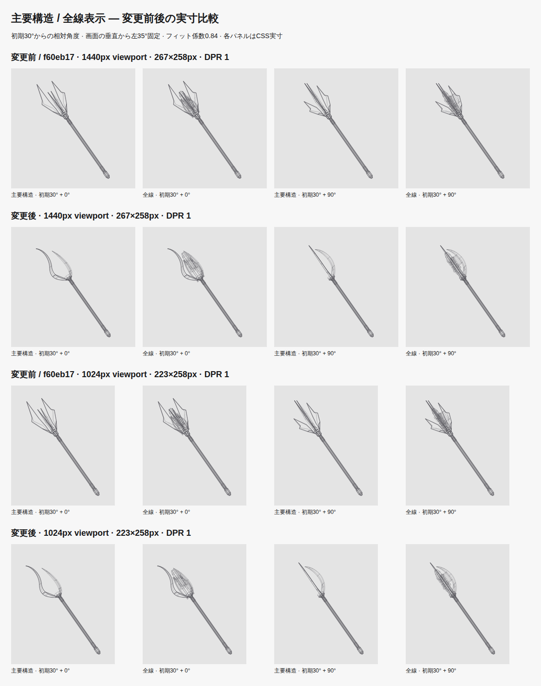
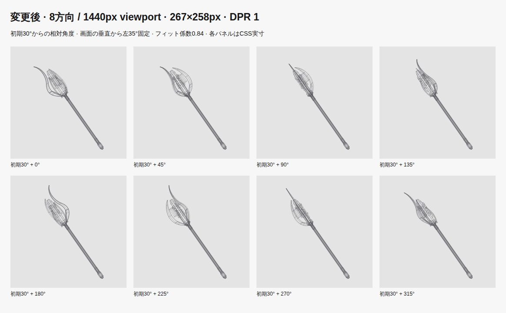
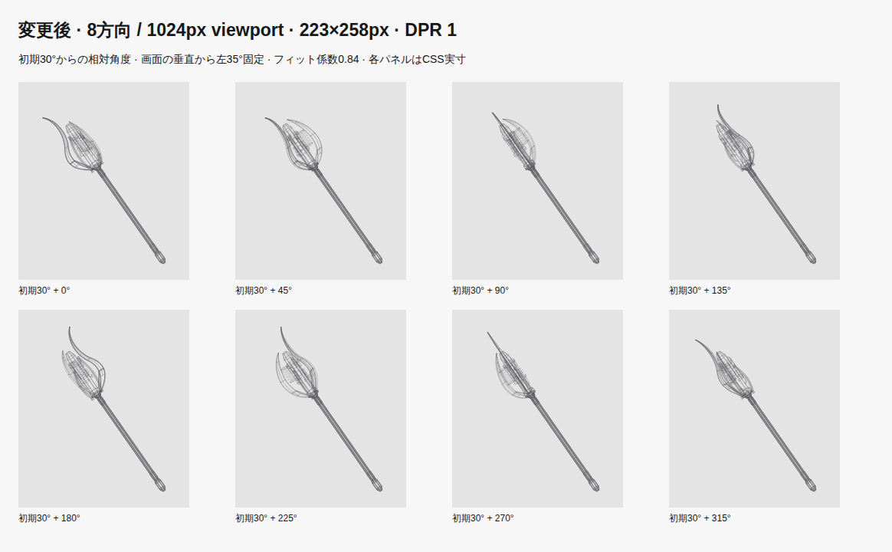
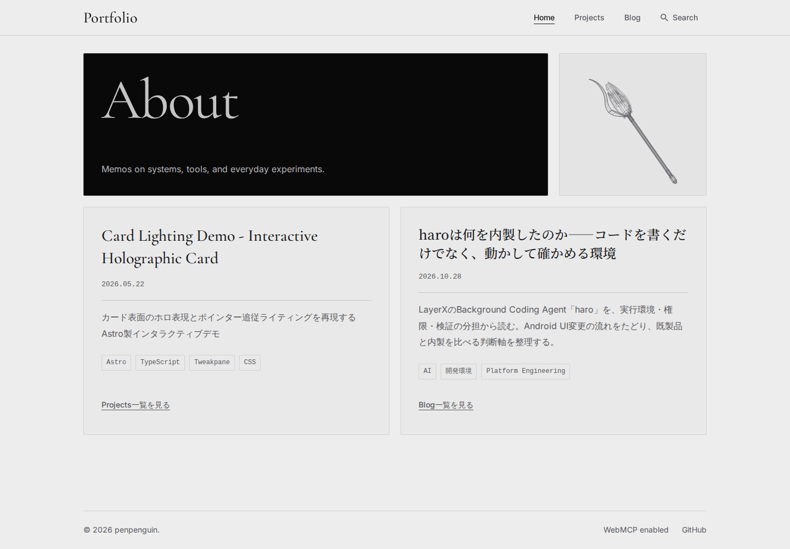
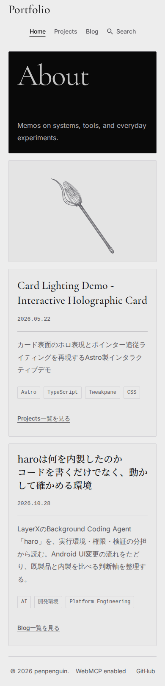

PR #170の角張った4枚羽根を、細身で大きく反るS字の主外殻と短いC字アームへ変更しました。主軸を直線のまま残し、曲線の内側には直線レール・多角柱の機構・端子・短いフィンを配置しています。
変更前: f60eb17a3896cef7f9a050462813ee4e18c867c1（着手時PR
head）。実装:
50696fb3cd166b86c03fdc75440b6913b396a219。確認した古い参照
93428d7
以降の検索テスト起動修正も保持しています。今回の比較元は角張った杖であり、以前のラック／塊状コアではありません。
S字・C字の外殻は異なる方位に配置し、それぞれに内外周と尖端へ薄くなる側壁を持たせました。曲線を沿うリブと3か所の短い橋、首元の支持アームで固定。細部を消した表示でも曲線と長い柄が読み取れ、全線表示では端子やフィンが内側に集まります。側面寄りの+45／90／225度でも、短いアームと主外殻の隙間・厚みを確認しています。
全長10。頭部長3.35 → 3.75（37.5%）、最大回転径2.123（ほぼ同じ）、長さ:幅は約4.71:1。柄の中央4.42単位は装飾を増やしていません。

全画像は画面上の左35°・初期30°・全周の解析境界から一度決めた固定フィット0.84。267×258px枠の縮尺は前 26.426203 → 後 25.647920 CSS px/モデル単位。回転角に応じた再フィットや中心追従はありません。線幅1.1／0.8／0.5px、alpha範囲とカメラも同じです。
主要構造表示には、主外殻だけでなくcomponent階層のC字アーム・曲線リブ・首元・支持・柄も含めています。微細線・内部計器・冷却・配線を除く比較専用の抽出で、本番UIには追加していません。全周境界と投影は全線モデルのまま固定しています。

同じ比較・DPR 2 / 主要構造8方向・267×258 / 主要構造8方向・223×258 / 変更前の8方向


267×258・DPR 2の8方向 / 223×258・DPR 2の8方向。曲線は両DPRで確認しました。表示比較の全線出力と実際のpreview Canvasは、前後×2枠×2 DPR×8角度の64条件でPNGバイト一致しています（一致記録）。
PCの3:1、モバイル外枠240px、About・カード・ヘッダー・フッター・自然なスクロールを維持。viewportと実描画領域は次のとおりです。各幅をDPR 1/2で保存しました。
| viewport | 実描画領域 | Home全体 |
|---|---|---|
| 1440px | 267×258px | DPR 1 / DPR 2 |
| 1024px | 223×258px | DPR 1 / DPR 2 |
| 980px | 914×238px | DPR 1 / DPR 2 |
| 768px | 726×238px | DPR 1 / DPR 2 |
| 390px | 348×238px | DPR 1 / DPR 2 |
| 320px | 278×238px | DPR 1 / DPR 2 |


変更前のHome: 1440px / 390px / 320px。変更前の実測 / 変更後の実測。
AMD Ryzen 5 3600 6-Core Processor / Linux 6.18.54.1-microsoft-standard-WSL2 / Chromium 156.0.8078.4 / Node v26.12.1。各条件で60実描画のウォームアップ後、480実描画を採取。clearRectから投影と最後のCanvas strokeまでのCPU時間（計測オーバーヘッドを含む）。省略rAF、GPU・合成時間は含みません。
| 条件 | 中央値 前→後 | p95 前→後 |
|---|---|---|
| 267×258 / DPR 1 | 0.3 → 0.4 ms | 0.6 → 0.7 ms |
| 348×238 / DPR 2 | 0.4 → 0.4 ms | 0.7 → 0.7 ms |
この環境でp95 8msの作業目安を満たしました。全端末への保証ではありません。線分 1,144 → 1,420、共有頂点 818 → 1,098。曲線境界の追加に伴いSVGとHTMLは増えています。
| 配信サイズ | 変更前 | 変更後 |
|---|---|---|
| Home HTML | 215,678 B | 265,750 B |
| Home HTML gzip | 21,014 B | 25,861 B |
| 静止SVG | 205,444 B | 255,516 B |
| 静止SVG gzip | 16,914 B | 21,645 B |
変更前の環境・生480サンプル×2条件 / 変更後の環境・生480サンプル×2条件。
npm run check: 97ファイル、エラー・警告・ヒント0。npm run lint、Prettier、git diff --check通過。
npm run test -- --run:
53ファイル・324テスト通過。旧4枚羽根専用の期待値を置換し、既存操作テストの削除・skipなし。
npm run build: AstroとPagefind生成成功。npm run test:visual -- --workers=2:
ビルド済みpreviewを標準手順で起動して90テスト通過。接続先は
http://127.0.0.1:4324/portfolio/。
未検証: Firefox／Safari、実機タッチ、実タブ由来の非表示通知、Windowsでのテスト起動。タッチはChromiumエミュレーション、visibilitychangeは合成イベントと単体テストで確認しました。マージ・サイト公開は行っていません。
変更ファイル:
DESIGN.md、src/utils/wireframeGeometry.ts、src/utils/wireframeStaffShells.ts、tests/unit/docs/design-guidelines.test.ts、tests/unit/utils/wireframeGeometry.test.ts、tests/unit/utils/wireframeStaffShells.test.ts。